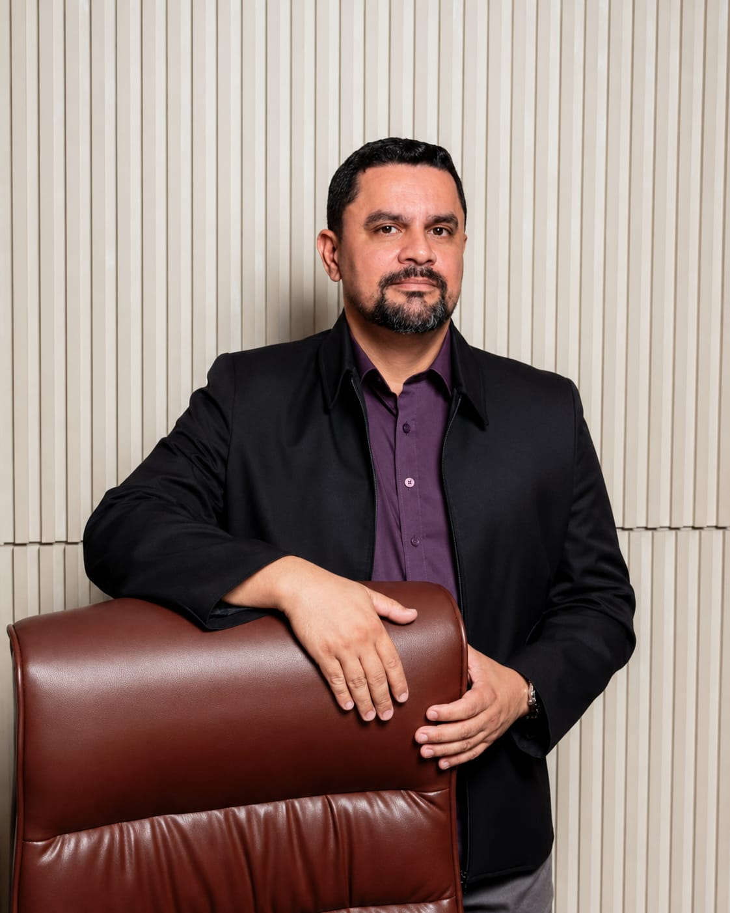
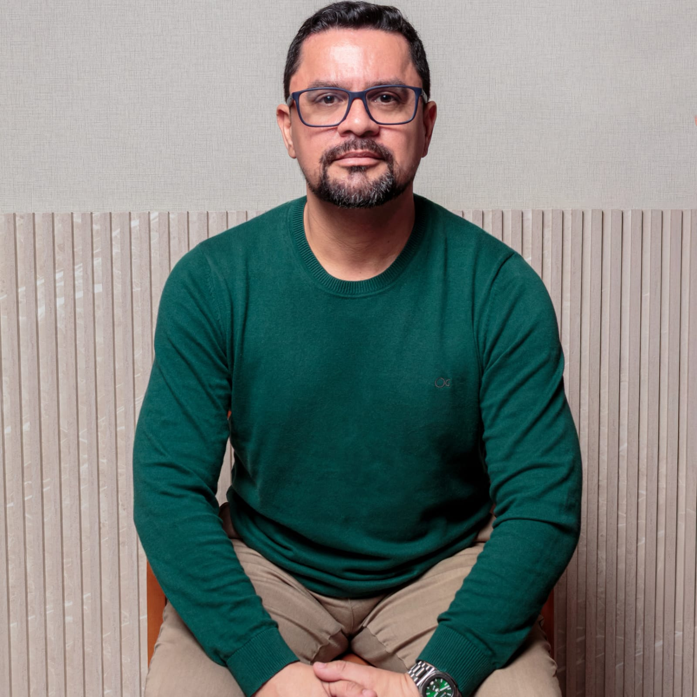
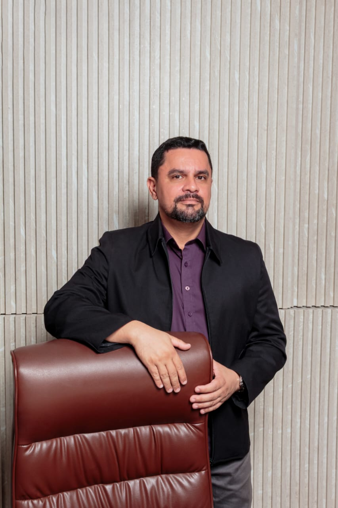
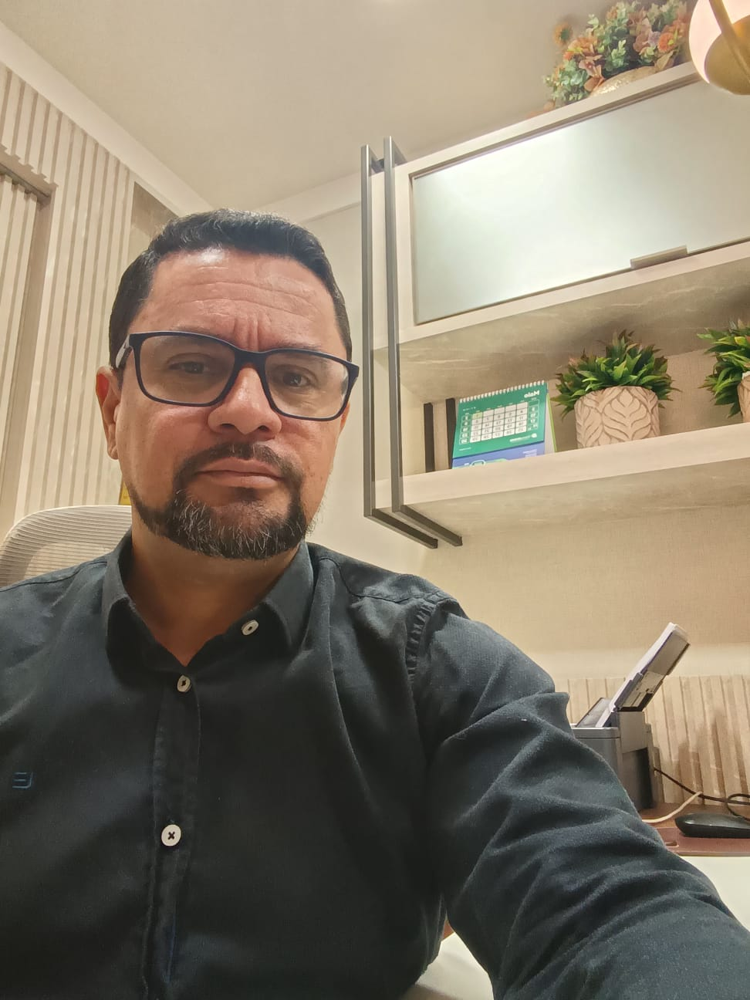
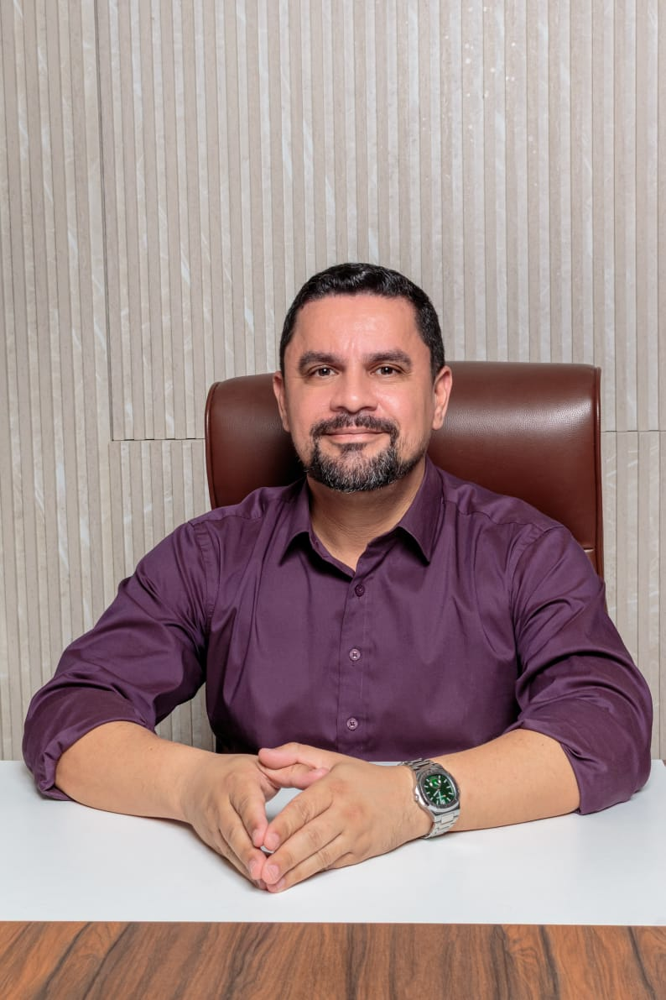
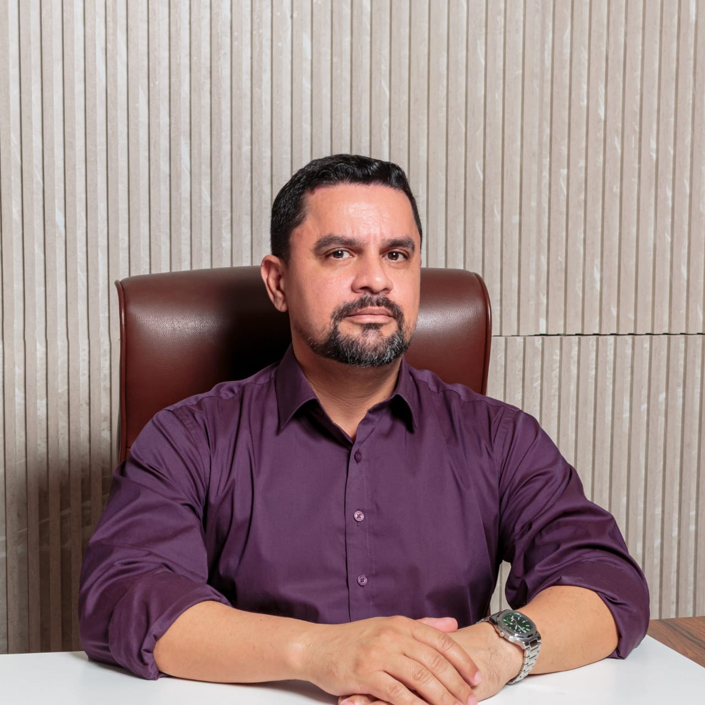

Ansiedade constante, cansaço mental e a dificuldade de desacelerar. Psicoterapia em Terapia Cognitivo-Comportamental (TCC) — uma abordagem estruturada, com objetivos combinados em conjunto, presencial em Colatina-ES e online para todo o Brasil.
16/8817
Registro ativo
Protocolo
científico
Para todo o Brasil
Presencial em Colatina





Max Régis de Oliveira é psicólogo clínico (CRP 16/8817), pós-graduado em Terapia Cognitivo-Comportamental (TCC) e em Neurociências Cognitivas. Realiza atendimento presencial em Colatina-ES na Clínica Cardioped (Rua Ovídio Vitali, 68, Fazenda Vitali) e terapia online por videochamada para todo o Brasil (Res. CFP 09/2024), com foco em ansiedade, estresse, esgotamento emocional e avaliação neuropsicológica. Contato pelo WhatsApp (27) 99246-3839 ou recepção (27) 3717-0172.
Sem burocracia. Respondo as mensagens no WhatsApp em horário comercial.
Me manda uma mensagem no WhatsApp. Você conta brevemente o que está vivendo — sem julgamento e sem compromisso. Respondo as mensagens no WhatsApp em horário comercial.
Conversamos sobre sua situação, seus objetivos e como funciona o processo terapêutico. Você decide com calma, sem pressão.
Sessões semanais. A TCC é uma abordagem estruturada, com objetivos combinados em conjunto.
A Terapia Cognitivo-Comportamental é uma das abordagens psicológicas mais investigadas na literatura internacional para transtornos de ansiedade e estresse.
Psicólogo Clínico • CRP 16/8817 • Colatina-ES e Online.
Psicólogo Clínico
CRP 16/8817 · ESAtendo adultos que convivem com ansiedade, estresse e esgotamento, utilizando a Terapia Cognitivo-Comportamental (TCC) integrada aos conhecimentos das Neurociências Cognitivas.
Meu trabalho une rigor técnico e escuta acolhedora. Nas sessões, examinamos juntos a relação entre pensamentos, reações do corpo e comportamentos cotidianos, definindo objetivos claros para o seu acompanhamento.
Atendimento presencial em Colatina-ES (Clínica Cardioped) e online por videochamada para todo o Brasil.
Cada acompanhamento é planejado individualmente, com fundamentação científica, ética e sigilo profissional.
Acompanhamento psicológico voltado ao manejo da ansiedade, preocupação excessiva, esgotamento profissional, pânico e regulação emocional. A TCC é uma abordagem estruturada, com objetivos combinados em conjunto.
Presencial em Colatina · Online para todo o BrasilInvestigação clínica detalhada de funções cognitivas como atenção, memória, funções executivas e linguagem, por meio de entrevistas e instrumentos padronizados, conforme indicação individual.
Atenção · Memória · Funções Executivas · LinguagemServiço independente da psicoterapia, com página informativa própria. Conheça os recursos de monitoramento fisiológico (VFC) e estimulação não invasiva e como funciona a avaliação de indicação.
Conhecer os recursos → tDCS · taVNS · Neurofeedback · Biofeedback VFCA TCC é uma abordagem estruturada, com objetivos combinados em conjunto.
Intervenções validadas pelos principais estudos em psicologia clínica, sem achismo ou improvisação.
Espaço seguro para você trazer o que não consegue falar em mais lugar nenhum — com total sigilo profissional.
Cada etapa do acompanhamento é conversada e planejada junto com você, no seu ritmo.
Responda as 7 perguntas abaixo. É um rastreio informativo sobre sintomas de ansiedade nas últimas 2 semanas.
1. Sentir-se nervoso(a), ansioso(a) ou no limite
2. Não conseguir parar ou controlar as preocupações
3. Preocupar-se demais com situações diferentes
4. Dificuldade para relaxar
5. Ficar tão agitado(a) que é difícil ficar quieto(a)
6. Ficar facilmente irritado(a) ou aborrecido(a)
7. Sentir medo como se algo terrível fosse acontecer
Instrumento GAD-7 — Spitzer et al., 2006. Validado em pt-BR (Moreno et al., 2016).
Um pouco do consultório, do dia a dia e de conteúdo educativo sobre saúde mental.

É normal ter dúvidas. Aqui estão as respostas para as mais comuns.
Sem compromisso. Você conta o que está vivendo e a gente vê juntos como posso ajudar.
Preencha seus dados básicos de contato. Para proteger sua privacidade (LGPD), não é necessário descrever sintomas clínicos neste formulário.